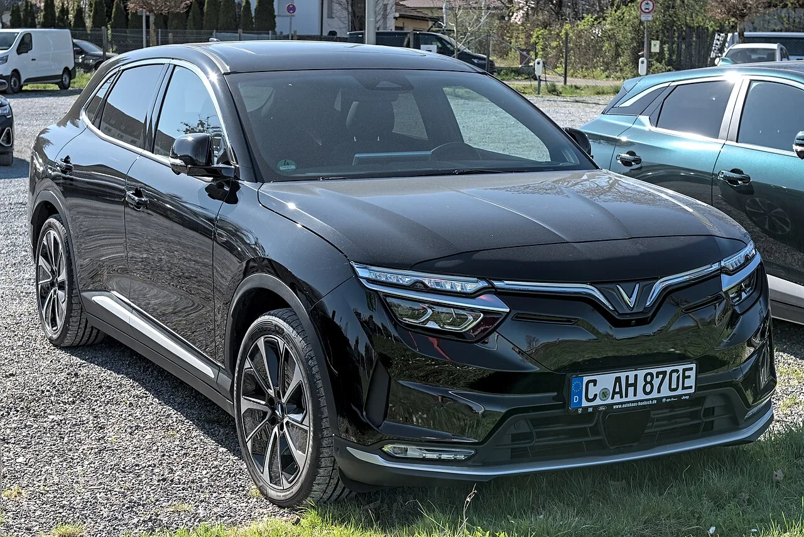
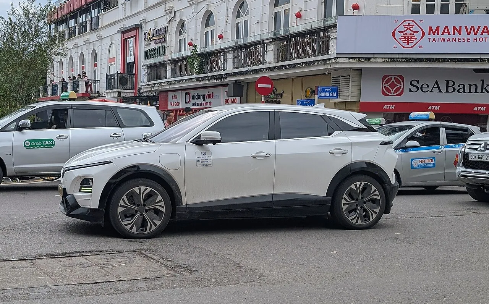
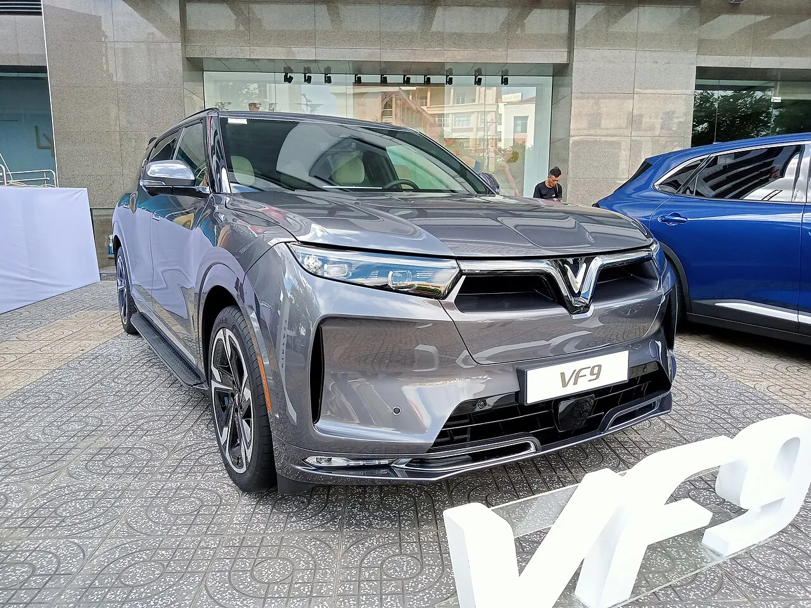
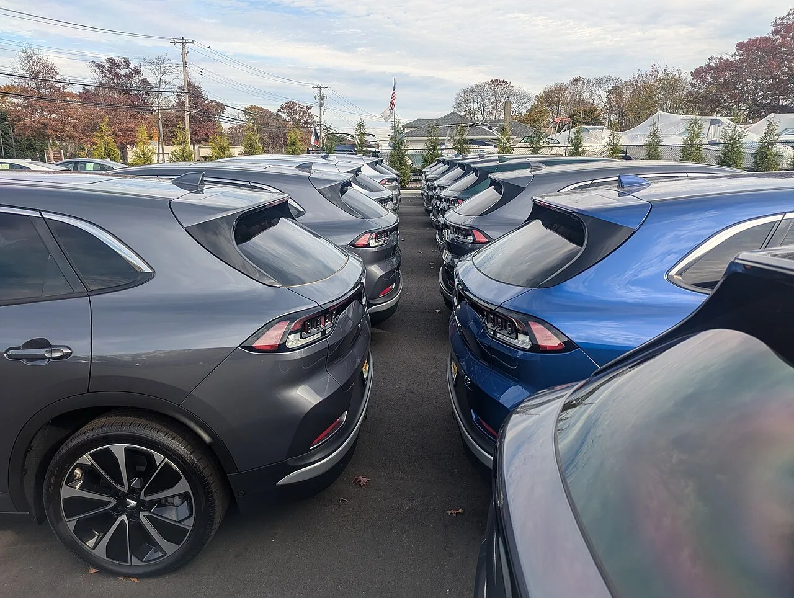
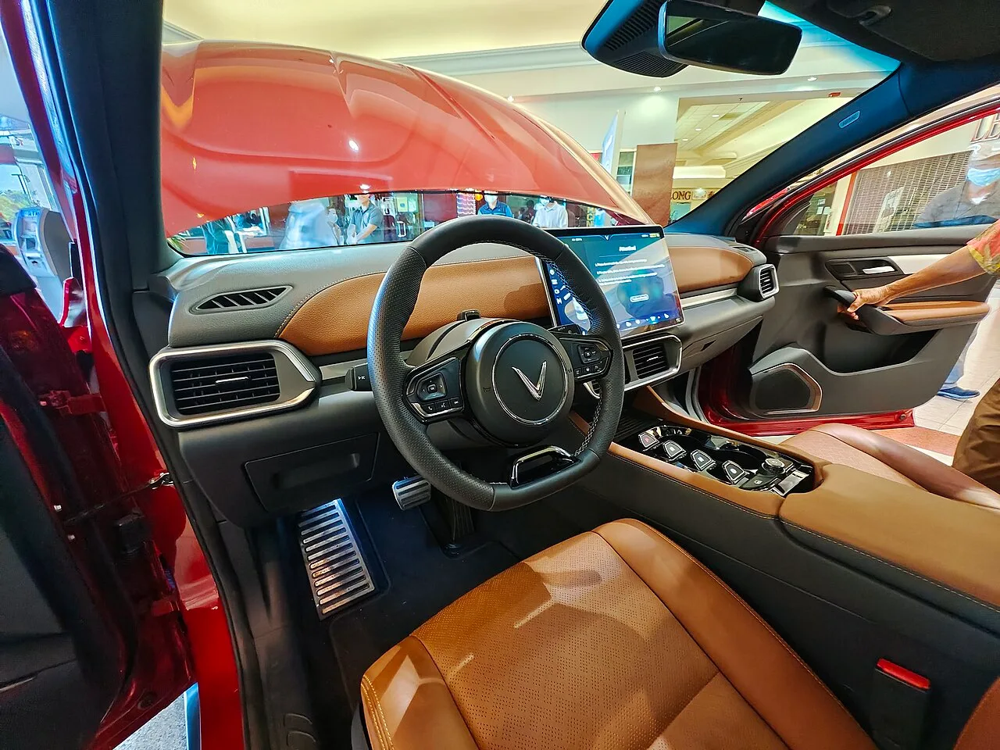

▲ 빈패스트 VF8. 유럽·미국 시장에는 이미 상륙했지만 한국 진출은 8년째 검토 단계에 머물러 있다 ⓒ Alexander Migl / Wikimedia Commons (CC BY-SA 4.0)
2018년, 한국GM 소속으로 베트남 GM 비담코(하노이) 공장에 파견 나갔던 임원과 실무진 상당수가 한꺼번에 새 회사로 자리를 옮겼다. 행선지는 베트남 신생 자동차 브랜드 '빈패스트(VinFast)'가 그해 7월 서울에 새로 세운 한국 법인이었다. 독일 프랑크푸르트·중국 상하이와 함께 발표된 이 서울 법인은, 겉으로 보기엔 빈패스트가 한국 시장 진출을 진지하게 준비하고 있다는 신호였다.
그로부터 8년이 지난 지금, 빈패스트는 미국 나스닥에 상장하고 유럽·인도·인도네시아·필리핀에 잇달아 매장을 열었지만 정작 한국 땅에서는 VF6·VF7·VF8·VF9 어느 모델도 정식 판매되지 않고 있다. 왜 유독 한국 앞에서만 멈춰 서 있는 걸까. 그리고 최근 불거진 재무 구조조정은 이 흐름에 어떤 영향을 줄까.
1. 2018년 서울 법인 — 잊혀진 첫 시도
빈패스트는 2017년 6월 베트남 최대 민간기업 빈그룹의 자동차 부문으로 출범했다. 창업 이듬해인 2018년 7월 31일, 빈패스트는 독일 프랑크푸르트·중국 상하이·대한민국 서울에 동시에 해외 지사를 설립한다고 발표했다. 당시 빈패스트는 BMW·GM·마그나 슈타이어·보쉬·지멘스 등과 잇달아 파트너십을 맺으며 유럽·미국 부품·설계 역량을 빠르게 흡수하던 시기였다.
흥미로운 대목은 서울 법인의 초기 인력 구성이다. 나무위키 등에 정리된 내용에 따르면, GM의 베트남 합작법인 비담코(VIDAMCO, 하노이 공장) 파견 경험이 있던 한국GM 임원진 일부와 실무팀 상당수가 이 서울 법인을 통해 단체로 이직했다. 시점도 절묘했다. GM 본사는 2018년 6월 비담코 공장 지분을 빈패스트에 넘기기로 결정했고, 공교롭게도 그 직후 서울 법인 설립과 인력 이동이 이어졌다. 베트남 현지 사정과 자동차 생산 실무를 동시에 아는 인력이 곧바로 빈패스트 한국 조직의 뼈대가 된 셈이다. 그만큼 당시 업계에서는 이 법인을 단순한 사무 거점이 아니라, 한국 시장 진출을 염두에 둔 교두보로 해석하는 시각이 많았다.

▲ 하노이 시내를 달리는 빈패스트 VF6. 서울 법인 설립 당시 빈패스트 실무진 상당수가 베트남 현지 경험이 있는 한국GM 출신이었다 ⓒ Elmschrat / Wikimedia Commons (CC BY-SA 4.0)
그러나 이후 8년간 서울 법인이 국내에서 차량 판매·인증·서비스망 구축으로 이어졌다는 공식 발표는 나오지 않았다. 프랑크푸르트 법인이 유럽 판매·인증 거점으로 실제 가동된 것과는 대조적인 흐름이다.
2. 현지 딜러의 말 — "관심은 있지만, 지금은 어렵다"
빈패스트가 유럽·미국 모터쇼에 SUV 풀라인업을 앞세워 등장할 때마다 한국 진출 여부는 단골 질문이었다. 국내 매체 데일리카가 현지 전시 담당자에게 직접 물은 답변이 이를 잘 보여준다.
📍 데일리카 인터뷰 — 빈패스트 전시 담당자 발언
빈패스트 전시 담당자는 "한국시장에 대해 여전히 관심을 기울이고 있다"면서도, 현재로서는 진출이 쉽지 않다고 판단한다고 밝혔다. 이유로는 현대차·기아·제네시스 등 현대차그룹이 국내 시장에서 차지하는 압도적으로 높은 점유율을 꼽았다. 신생 브랜드가 대규모 서비스망과 브랜드 신뢰를 동시에 요구하는 한국 시장에 곧바로 진입하기는 부담이 크다는 취지다.
이는 앞서 필리핀·인도네시아 진출 방식과 비교하면 더 뚜렷해진다. 빈패스트는 필리핀에서 13개 현지 딜러와 손잡고 27개 전시장을 확충하는 식으로, 처음부터 현지 파트너의 유통망을 빌려 빠르게 매장 수를 늘리는 전략을 택해왔다. 한국에서는 아직 이런 딜러 파트너십조차 공개된 바 없다.
3. 정작 본토에서는 이미 '국민차'
한국 진출이 지지부진한 사이, 빈패스트는 정작 자국 베트남 시장에서는 압도적인 성장세를 보이고 있다. 다나와 자동차 보도에 따르면 빈패스트는 2025년 베트남에서 17만 5,099대를 판매했다. 이는 전년 대비 두 배 이상 늘어난 수치다.
| 모델 | 세그먼트 | 2025년 판매량 |
|---|---|---|
| VF 3 | 초소형 SUV | 44,585대 (판매 1위, '국민 전기차') |
| VF 5 | 소형 SUV | 43,913대 |
| VF 6 | 서브컴팩트 SUV | 23,291대 |
| 리모 그린(상용) | 택시·상업용 | 27,127대 (출시 4개월 만) |
빈패스트 대중화의 또 다른 축은 계열 차량호출 서비스 GSM(그린 스마트 모빌리티)이다. VF5 기반 택시 모델 '헤리오 그린'이 한 해에만 1만 2,568대 판매되며 친환경 대중교통 전환을 이끌었고, GSM은 2025년 4분기 기준 베트남 차량호출 시장 점유율 약 51.5%까지 확대한 것으로 알려졌다. 빈그룹 계열사가 자사 차량을 대량으로 소화해주는 이 구조가 빈패스트의 내수 판매를 사실상 떠받치고 있는 셈이다.
실제로 베트남 내수가 전체 실적에서 차지하는 비중은 압도적이다. 빈패스트의 2025년 글로벌 인도량은 약 20만 대로, 2024년(9만 7,399대) 대비 두 배 이상(약 102%) 늘었는데, 이 증가분의 대부분이 베트남 한 시장에서 나왔다. 2024년 한 해 베트남 내수 판매가 8만 7천여 대였던 점을 감안하면, 1년 새 내수 시장 성장분만으로도 빈패스트 전체 해외 판매량을 압도한 셈이다. 그만큼 빈패스트는 아직 '글로벌 브랜드'라기보다 '베트남 국민차가 해외로 뻗어나가는 중인 브랜드'에 가깝다는 평가가 나온다.
4. 글로벌 확장은 계속된다 — 미국·유럽·인도·인도네시아·필리핀
빈패스트는 2023년 8월 미국 나스닥에 상장했고, 같은 해 유럽 제네바모터쇼(카타르 특별전)에서 VF6·VF7·VF8·VF9로 이어지는 SUV 풀라인업을 한꺼번에 공개했다. 전 모델의 디자인은 이탈리아 디자인하우스 피닌파리나가 맡았다.
| 모델 | 포지션 | 주요 특징 |
|---|---|---|
| VF 6 | 소형 SUV | 미국 출시가 약 3만 달러 안팎으로 거론, 빈패스트 베트남 판매량 3위권 |
| VF 7 | 준중형 SUV | 미국 출시가 약 3만 7천 달러 안팎으로 거론 |
| VF 8 | 중형 SUV | 87.7kWh 배터리, 공인 주행거리 최대 412km급(해외 인증 기준) |
| VF 9 | 대형 7인승 SUV | 전장 5,119mm, 최고출력 402마력, 완충 주행거리 485~680km(해외 인증 기준) |
※ 가격·주행거리는 국가별 인증·트림에 따라 달라지며, 한국 미출시로 국내 인증 수치는 없음

▲ 빈패스트 대형 SUV VF9. 전 세그먼트 SUV 풀라인업을 앞세워 미국·유럽·인도·인도네시아·필리핀으로 매장을 넓히고 있다 ⓒ Wikimedia Commons (CC BY-SA 4.0)
미국에서는 2025년 판매량이 1,413대로 전년 대비 57% 줄었고, 노스캐롤라이나 신설 공장 가동 시점도 2028년으로 미뤄졌다는 보도가 나오는 등 순탄치만은 않다. 최근에는 당초 7,500명 고용을 약속했던 이 공장의 채용 계획이 1,400명 수준(약 81% 축소)으로 대폭 줄었고, 노스캐롤라이나 주 정부가 약속 불이행을 이유로 빈패스트를 상대로 소송을 제기했다는 외신 보도까지 나왔다. 미국 사업만 놓고 보면 계획 지연과 갈등이 겹친 상태다.
그럼에도 인도네시아에는 최대 12억 달러를 투자해 연산 3만~5만 대 규모 공장을 2026년까지 건설하겠다는 계획을 유지하고 있고, 필리핀에서는 13개 딜러와 손잡고 27개 전시장을 확충하는 등 아시아 신흥시장 확대에는 여전히 속도를 내는 중이다. 미국은 속도 조절, 아시아는 가속이라는 상반된 전략이 동시에 진행되고 있는 셈이다.

▲ 미국 딜러 부지에 나란히 놓인 빈패스트 VF8들. 미국 시장에서는 최근 판매 감소와 공장 가동 연기가 동시에 보도됐다 ⓒ Carspotterny / Wikimedia Commons (CC BY 4.0)
빈패스트의 글로벌 시장별 확장 소식은 관련 외신에서 확인할 수 있다. 데일리카 관련 기사 바로가기
5. 발목 잡는 재무구조 — 제조부문 매각과 '팹리스' 전환
빠른 확장 이면에는 심각한 재무 부담이 있다. 데일리카 보도에 따르면 빈패스트 주가는 한때 65%까지 폭락했고, 블룸버그는 그 배경으로 "전기차 사업 부문에서 기대만큼 성과를 거두지 못하고 있다"는 점을 지목했다.
✅ 다나와 자동차가 전한 구조조정 핵심
· 2025년 베트남에서 17만 5,099대(약 30% 점유율)를 팔고도 순손실이 약 100조 동(베트남 동화)에 달해 사업 지속성이 흔들림
· 전체 부채 약 182조 동 중 90조 동을 신설 제조법인 VFTP로 이전, 본사 부채비율을 기존 대비 20% 미만으로 압축
· 하이퐁·하틴 공장과 배터리 생산시설을 포함한 VFTP를 약 13조 동에 매각, 이후 5년간 위탁생산 계약(차량 가격의 약 5% 웃돈)
· 빈패스트 본사는 설계·영업·지적재산권·R&D 중심의 '팹리스' 기업으로 재편, 2027년 흑자 전환을 목표로 제시
다만 인도·인도네시아·미국에 예정된 해외 공장 건설 계획 자체는 유지된다는 점도 함께 확인됐다. 즉 생산은 위탁하되, 신흥시장 확장 속도는 늦추지 않겠다는 것이 현재 빈패스트의 방향으로 읽힌다. 이런 구조조정이 한국 시장 진출 시점을 앞당길지, 오히려 신중론에 더 힘을 실을지는 아직 어느 쪽으로도 단정하기 어렵다.

▲ 빈패스트 VF8 실내. 대형 세로형 디스플레이와 최소화된 물리버튼 구성은 최근 전기 SUV의 보편적 트렌드를 따른다 ⓒ Meiko / Wikimedia Commons (CC BY-SA 4.0)
6. 그래서, 한국은 언제쯤?
정리하면 빈패스트의 한국 진출은 "법인은 있지만 판매망은 없다"는 상태가 8년째 이어지고 있다. 현지 딜러 관계자의 말대로 현대차그룹의 압도적 국내 점유율이 여전히 가장 큰 진입장벽이고, 여기에 최근 불거진 재무 구조조정까지 겹치며 신규 시장 진입보다 기존 사업 정상화가 우선순위로 밀린 모습이다.
반대로 볼 여지도 있다. 팹리스 전환으로 본사 부채 부담이 줄고 2027년 흑자 전환에 성공한다면, 이미 세워둔 서울 법인을 발판으로 필리핀식 '현지 딜러 파트너십' 모델을 한국에도 적용할 가능성은 남아 있다. 다만 이는 어디까지나 시나리오이며, 현재까지 공식적으로 확인된 것은 "진출 검토는 계속되고 있지만 구체적 시점은 정해지지 않았다"는 사실뿐이다.
7. 요약
빈패스트는 2018년 한국GM 출신 인력을 대거 흡수하며 서울에 법인을 세웠지만, 8년이 지난 지금까지 국내 차량 판매로는 이어지지 않았다. 현지 딜러 관계자는 여전히 관심은 있으나 현대차그룹의 압도적 점유율 때문에 진출이 쉽지 않다고 밝혔다.
그사이 빈패스트는 베트남 본토에서 2025년 17만 5,099대를 판매하며 국민차 반열에 올랐고, 미국 나스닥 상장과 유럽·인도·인도네시아·필리핀 확장을 이어갔다. VF6부터 대형 7인승 VF9까지 전 세그먼트 SUV 라인업도 갖췄다.
다만 최근에는 순손실 확대에 따른 제조부문 매각과 '팹리스' 전환이라는 대대적 구조조정에 들어갔다. 이 변화가 한국 진출 시계를 앞당길지 늦출지는 아직 미지수이며, 서울 법인의 향방이 그 첫 번째 신호가 될 전망이다.